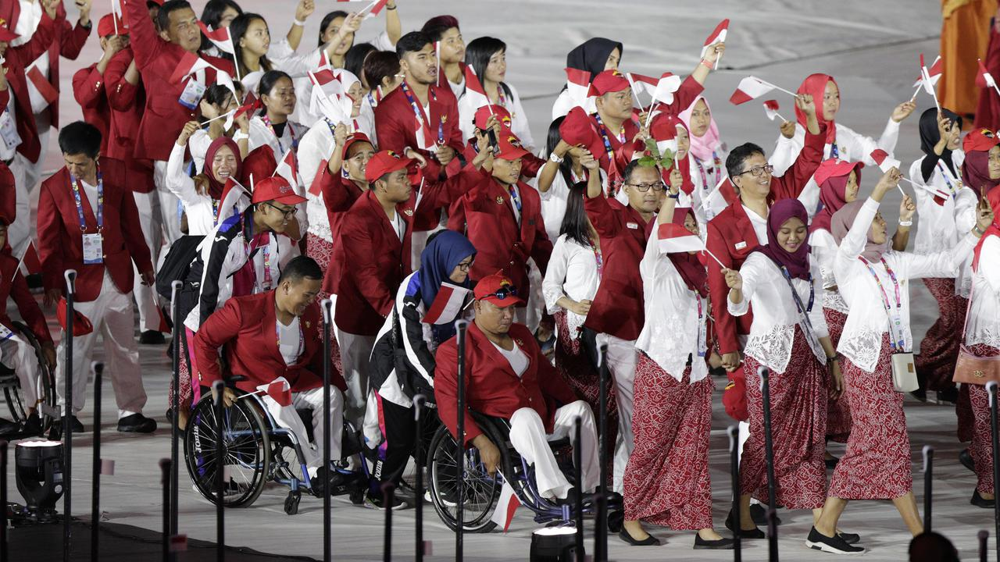

| BERITA ASIAN PARA GAMES 2018 | |
|

Upacara pembukaan Asian Paragames 2018 mendapat tanggapan positif dari masyarakat Indonesia. Walau tak sebesar perhelatan Asian Games, Asian Paragames 2018 juga mendapat perhatian. Di media sosial, opening ceremony Asian Paragames 2018 juga menjadi pembicaraan hangat. Di twetter Indonesia tagar opening ceremony Asian Paragames 2018 menjadi trending topik sejak pukul 19.30 WIB. Pengguna twetter indonesia juga membuat tagar dukung APG 2018. Tak hanya itu, tagar opening ceremony Asian Paragames 2018 juga masuk dalam daftar trending topik dunia. Hingga pukul 22.30 WIB, tagar tersebut berada di posisi ke tujuh world wide. Indonesia menambah satu goal melalui Fabry di menit ke 69. Tendangan jarak jauh dari Febry menggentarkan gawang kamboja. Pada umumnya, masyarakat memuji acara pembukaan yang berlangsung meriah dan penuh makna untuk mendukung perjuangan atlet difabel dalam ajang ini. Selain itu, acara pembukaan juga menampilkan budaya Indonesia yang dipadukan dengan kekayaan alam. Tak lupa, pada acara pembukaan, penonton dan atlet juga mengheningkan cipta untuk korban gempa Palu dan Donggala. Asian Paragames 2018 melibatkan 3000 ribu atlet dari 43 negara. Ajang ini dipusatkan di komplek Glora bungkarno hingga 16 Oktober mendatang. |
|
| Copyright © 2018 Bola.com | |